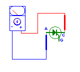

Un tiristor es un dispositivo conmutador biestable que tiene la propiedad de pasar rápidamente al esta "ON"(encendido) para una plena corriente de trabajo cuando recibe un pulso momentáneo de corriente en su terminal de control, y sólo puede ser puesto en "OFF"(apagado) con la interrupción de la corriente principal de trabajo, interrumpiendo el circuito o haciendo circular una corriente de sentido contrario. Los tiristores son usualmente dispositivos de mediana y de alta potencia. Son el equivalente sólido de los interruptores mecánicos, por lo cual dejan pasar plenamente o bloquear por completo en paso de la corriente de trabajo, sin niveles intermedios; o todo, o nada.
Al grupo de los tiristores pertenecen dispositivos tales como el DIAC, equivalente a dos diodos zener puestos en serie pero en sentidos inversos, o sea que sólo conduce corrientes cuando éstas alcanzan cierto voltaje, así sean alternas; el SCR, un rectificador de conducción controlada; el TRIAC, equivalente a dos SCR en contraparalelo.
SCR(Rectificador Controlado de Silicio)
Este es un pequeño dispositivo de tres terminales, que hacen el mismo trabajo semicondudtor de un diodo normal(deja pasar corriente en un solo sentido), pero con la diferencia de que en éste se puede controlar el momento en el cual pueden comenzar a pasar los electrones.
Al primer terminal se le denomina Cátodo, y es utilizado como entrada de corriente. El segundo sirve de salida y se le llama Anodo y el tercero es el Gate, o terminal de control para el paso de corriente cátodo - ánodo. El gate, llamado también terminal de arranque o encendido del tiristor, sólo sirve para iniciar el paso de corriente entre los otros dos terminales, lo que logra con una corriente muy baja(unos 20 miliamperios).
DIAC( Diodo Interruptor de Corriente Alterna)
Este es un dispositivo controlado por voltaje, el cual se comporta como dos diodos zener puestos en contraparalelo, como ya lo digimos: cuando el voltaje de cualquier polaridad entre sus dos terminales excede el valor especificado, entra en avalancha y disminuye su resistencia interna a un valor muy bajo. Esto significa que, si es colocado en paralelo con la salida de una fuente de corriente alterna podrá recortar todos los picos positivos y negativos que pasen del voltaje del umbral del diac.
Si es puesto en serie, solamente dejará pasar corriente cuando lleve más tensión que la del gatillado para triacs en circuitos de corriente alterna. El dispositivo tiene un rango simétrico de conmutación(en ambos sentidos) de 20 a 40 voltios, tensión que usualmente excede el punto de umbral del gate de los triacs, de tal forma que estos trabajan siempre en un nivel seguro.
TRIAC
El diseño de los primeros TRIACs fue la respuesta a la necesidad industrial de dispositivos tiristores que pudieran controlar en fase todo el ciclo de una onda de corriente alterna, incorporando las funciones de 2 SCRs dentro de una sola pastilla semiconductora, y ambos controlados por un solo gate. Las características de compuerta(gate) del TRIAC son muy diferentes de aquellas para dos SCR en contraparalelo, para los SCR, se debe aplicar una señal positiva de control entre el Gate 1 y el terminal principal 1 cuando el terminal Principal 1 es negativo, y entre el Gate 2 y el terminal Principal 2 sea negativo. Este método de operación requiere de dos circuitos separados de compuerta.
En el TRIAC, el Gate 1 y el Gate 2 están conectados juntos y se pueden operar con solamente un circuito de control conectado entre las compuertas y el terminal Principal 1. El modo más fácil de gatillado para control de corriente alterna, se obtiene polarizando positivamente el terminal de compuertas cuando el Terminal Principal 1 sea positivo. En otras palabras, par poner en conducción en ambos sentidos al TRIAC basta con darle al gate un poco de señal de la misma corriente(polaridad) que haya en ese momento en el Terminal Principal 2.
Verificación y chequeo de tiristores
Si las características de voltaje y corriente de trabajo del tiristor lo permiten, puedes armar un crcuito para la comprobación del estado y la identificación del dispositivo(el ciruito de comprobación lo puedes ver en el indice). Cuando la bombilla enciende a plena luz es porque está circulando la onda completa de la corriente alterna, esto significa que se trata de un TRIAC. Cuando se trata de un SCR la bombilla sólo suministra aproximadamente la mitad de su luz, porque solamente recibe los medios ciclos positivos. Para comprobar que el triac si esté apagado cada vez que la onda de la corriente de trabajo pasa por su nivel cero, la bombilla se debe apagar cuando se desconecte la resistencia de polarización del gate(esto sirve para comprobar que el dispositivo no esté en cortocircuito).
Prueba con el ohmetro o multimetro
Debido a que todos los medidores de resistencia tienen una fuente de corriente contínua(Pilas), se pueden verificar con este instrumento la gran mayoría de rectificadores SCR y TRIACs. Este procedimiento no sirve para los QUADRAC, ya que para estos necesitamos una señal de gatillado superior a los 20 voltios, y los ohmetros y multimetros sólo tienen 3 voltios. No se aconseja hacer estos chequeos con instrumentos que sólo usan una pila de 1.5 voltios, pues la señal que entregan no alcanza ni para probar LEDs(diodo emisor de luz).
Procedimiento
Coloquemos el ohmetro o multimetro en la escala para medir baja resistencia( R x 1). Coloquemos el caimán positivo(rojo) al cátodo del SCR, y conectemos el ánodo al cable negativo(negro), podrá parecer incorrecto, puesto que se ha dicho que el ánodo debe quedar positivo, pero resulta que las corrientes de salida en los terminales del instrumento tienen polaridad contraria a la que señalan sus signos y colores.
En este momento la aguja del medidor señala alta resistencia(si es que se mueve ). Ahora hagamos un puente entre los terminales gate y ánodo, esto acasionará que la aguja suba a una posición de baja resistencia, y se debe conservar allí aunque retiremos el puente que unió estos 2 terminales y suministró la señal de gatillado.
Si se trata de un triac, hagamos primero la prueba anterior, luego, invertimos los terminales del ohmetro(es posible que en esta última posición no se sostenga la aguja en su lugar de baja resistencia cuando reitre el puente, pero esto se debe a que la baja corriente del instrumento medidor no alcanza para mantener encendido el triac en esta polaridad). Para las pruebas, TP1 equivale al cátodo, y TP2 al ánodo.
